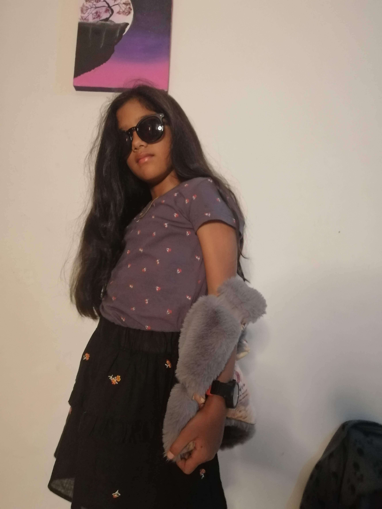
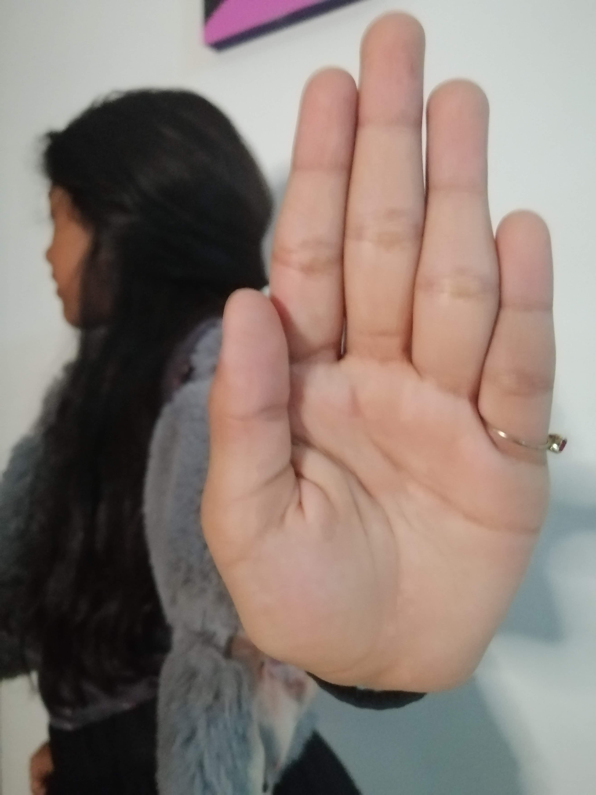
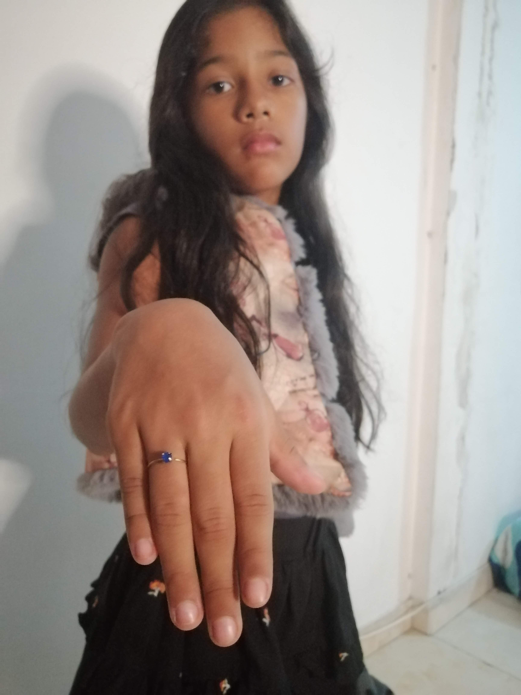
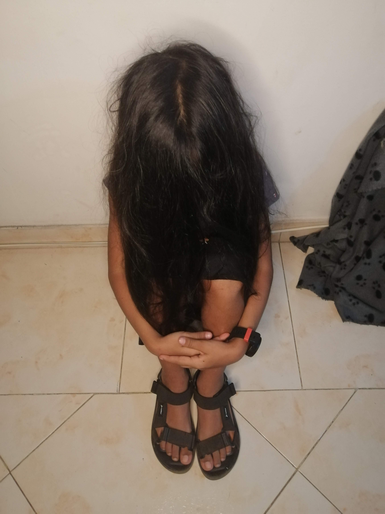
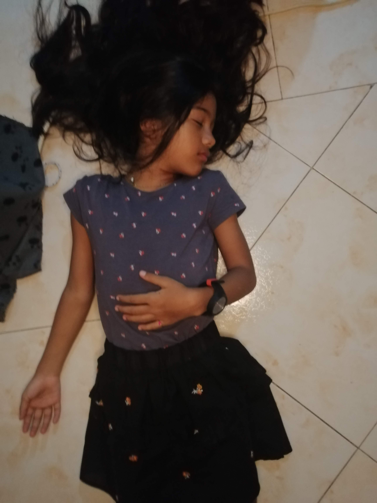
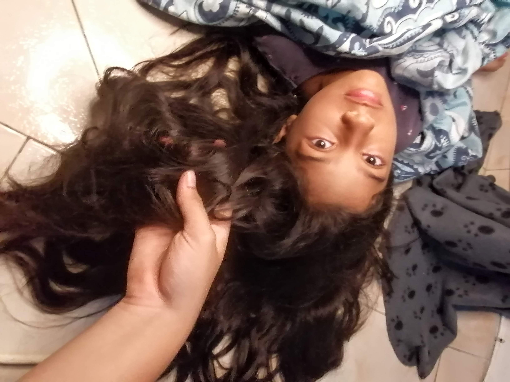
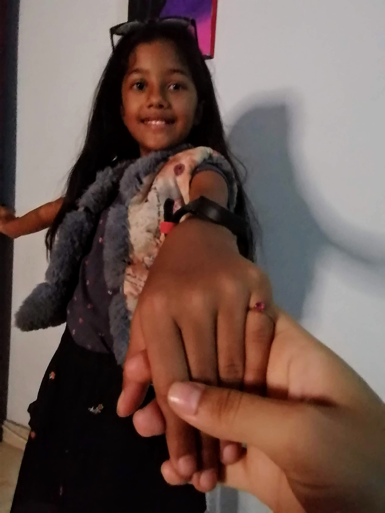
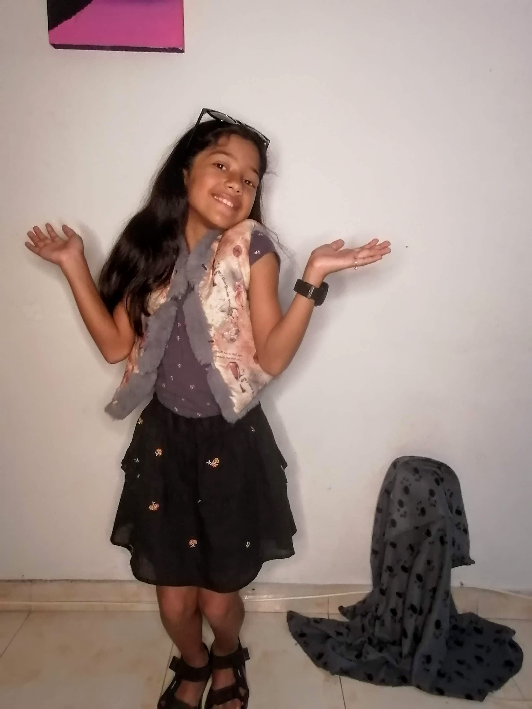

Ensayo Fotográfico
10 Fotografías de Chica Narrando una Historia
Este Ensayo tiene como base un parrafo en el que se narra la historia de una doncella,
más sus fotografías son adaptaciones modernas.
En el año 1810 tuvo lugar en Francia un caso de inhumación prematura, en
circunstancias que contribuyen mucho a justificar la afirmación de que la
verdad es más extraña que la ficción. La heroína de la historia era
mademoiselle Victorine Lafourcade, una joven de ilustre familia, rica y muy
guapa. Entre sus numerosos pretendientes se contaba Julien Bossuet, un pobre
littérateur o periodista de París. Su talento y su amabilidad habían despertado
la atención de la heredera, que, al parecer, se había enamorado realmente de él,
pero el orgullo de casta la llevó por fin a rechazarlo y a casarse con un tal
Monsieur Rénelle, banquero y diplomático de cierto renombre. Después del
matrimonio, sin embargo, este caballero descuidó a su mujer y quizá llegó a
pegarle.
Después de pasar unos años desdichados ella murió; al menos su estado se
parecía tanto al de la muerte que engañó a todos quienes la vieron. Fue
enterrada, no en una cripta, sino en una tumba común, en su aldea natal.
Desesperado y aún inflamado por el recuerdo de su cariño profundo, el
enamorado viajó de la capital a la lejana provincia donde se encontraba la
aldea, con el romántico propósito de desenterrar el cadáver y apoderarse de
sus preciosos cabellos. Llegó a la tumba. A medianoche desenterró el ataúd, lo
abrió y, cuando iba a cortar los cabellos, se detuvo ante los ojos de la amada,
que se abrieron. La dama había sido enterrada viva. Las pulsaciones vitales no
habían desaparecido del todo, y las caricias de su amado la despertaron de
aquel letargo que equivocadamente había sido confundido con la muerte.
Desesperado, el joven la llevó a su alojamiento en la aldea. Empleó unos
poderosos reconstituyentes aconsejados por sus no pocos conocimientos
médicos. En resumen, ella revivió. Reconoció a su salvador. Permaneció con
él hasta que lenta y gradualmente recobró la salud. Su corazón no era tan duro,
y esta última lección de amor bastó para ablandarlo. Lo entregó a Bossuet. No
volvió junto a su marido, sino que, ocultando su resurrección, huyó con su
amante a América. Veinte años después, los dos regresaron a Francia,
convencidos de que el paso del tiempo había cambiado tanto la apariencia de
la dama, que sus amigos no podrían reconocerla. Pero se equivocaron, pues al
primer encuentro monsieur Rénelle reconoció a su mujer y la reclamó. Ella
rechazó la reclamación y el tribunal la apoyó, resolviendo que las extrañas
circunstancias y el largo período transcurrido habían abolido, no sólo desde un
punto de vista equitativo, sino legalmente la autoridad del marido.
Imágenes:

Encuadre Vertical. Luz Artificial/Frontal/Suave. Enfoque a la dama-Automatico/lineal. Plano Americano. Ángulo Contrapicado

Ecuadre Vertical. Luz Artificial/Lateral/Semidifusa. Enfoque Manos-Dinamico. Plano Americano. Ángulo Contrapicado

Encuadre Vertical. Luz Artificial/Lateral/Semidifusa. Enfoque Mano-Manual/Punto único. Punto Áureo, Mano. Plano Medio. Ángulo Normal

Encuadre Vertical. Luz Artificial/Lateral/Semidifusa. Plano Medio. Ángulo Normal

Encuadre Vertical. Luz Artificial/Contrapicada/Semidifusa. Plano General. Ángulo Picado

Encuadre Vertical. Luz Artificial/Cenital/Suave. Plano Americano. Ángulo Cenital
.jpg)
Encuadre Horizontal. Luz Artificial/Cenital/Dura. Plano Entero. Ángulo Cenital

Encuadre Diagonal. Luz Artificial/Semilateral/Semidifusa. Enfoque Mano-Automatico/Dinamico. Punto Áureo, Rostro de la dama. Primer Plano. Ángulo Picado

Encuadre Vertical. Luz Artificial/Lateral/Semidifusa. Enfoque Mano-Manual/Dinamico. Punto Áureo, Mano. Plano Americano. Ángulo Contrapicado/Normal

Encuadre Vertical. Luz Artificial/Frontal/Suave. Plano Entero. Ángulo Normal